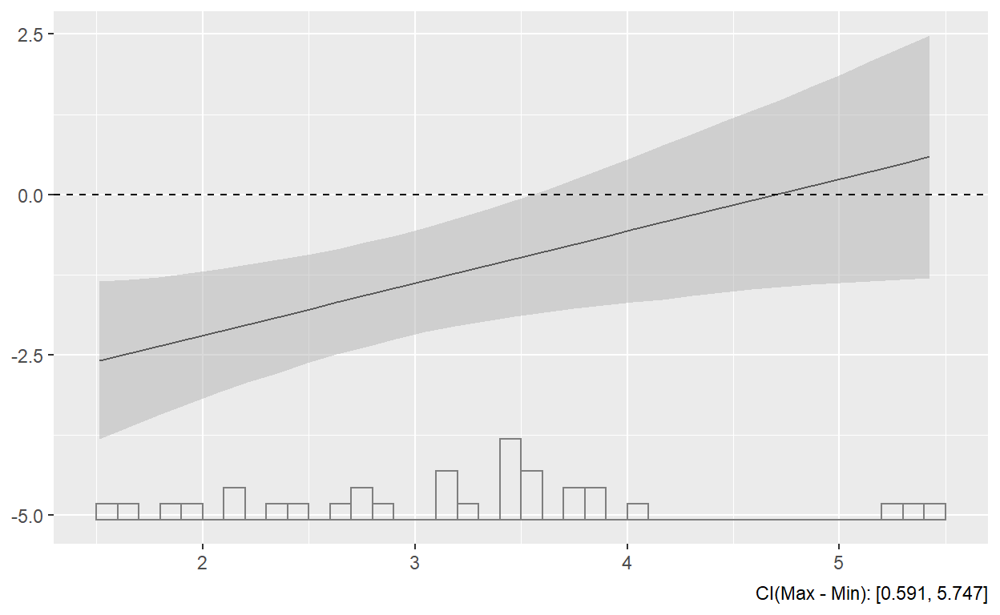
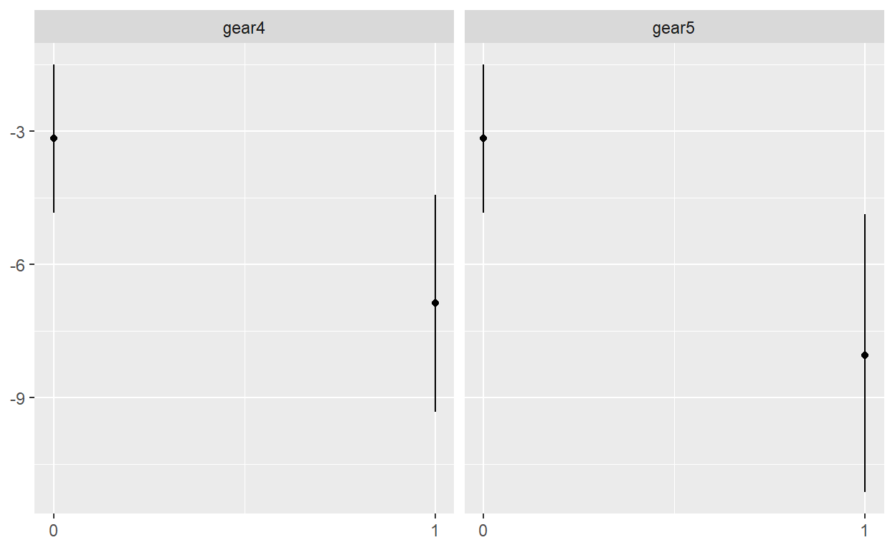

Lecture IV: Presenting Data
Preface
R Workshop Series
- R basics
- Munging Data
- Analyzing Data
- Presenting Data
- Reproduction
Toy Data and Model
Toy data: mtcars data, extracted from the 1974 Motor Trend US magazine, and comprises fuel consumption and 10 aspects of automobile design and performance for 32 automobiles (1973–74 models).
glimpse(mtcars)Tabulating
Over twenty packages for table presentation in R.
My favorite:
flextable: Made by David Gohel, good for any descriptive tables.gtsummary: Made by Daniel Sjoberg, good for biostatistician outputs.modelsummary: Made by Vincent Arel-Bundock, good for social scientific outputs.
Downside:
- May not work for a limited number of cases.
DT-based packages do not work withbookdown::pdf_documentvery well…so far.
Some backups:
stargazer: good for summary table and regular regression resultstexreg: when some results can’t be presented bystargazer, trytexreg(e.g., MLM results.)xtable: the most extensively compatible package, but need more settings to get a pretty output, most of whichstargazerandtexregcan automatically do for you.
Summary Tables
Output table
library(flextable)
tb_freq <-descr::freq(mtcars$cyl, plot = FALSE) %>%
tidytb_freq <- flextable(tb_freq) %>%
bg(bg = "#C90000", part = "header") %>%
color(color = "white", part = "header") %>%
color(~ Percent < 40, ~ Percent, color = "red") %>%
autofit
tb_freq
# print(tb_freq, preview = "docx")
# print(tb_freq, preview = "pptx")Descriptive table
summary(mtcars)
library(gtsummary)mtcars %>%
tbl_summary(statistic = list(all_continuous() ~ "{mean} ({min}, {max})"))Regression table
This is the basic model we’ll play with
m1 <- lm(mpg ~ wt + cyl + disp + gear, data = mtcars)
summary(m1)
library(modelsummary)msummary(m1,
stars = TRUE,
title = "一个漂亮的回归结果表格",
subtitle = "A Pretty Regression Table",
notes = "来源：Dr Hu's R workshop。",
coef_map = c("cyl" = "Number of cylinders",
"disp" = "Displacement (cu.in.)",
"gear" = "Number of forward gears",
"wt" = "Weight (1000 lbs)")) %>%
tab_footnote(
footnote = "A footnote just to show I can add a footnote.",
locations = cells_column_labels(columns = vars(`Model 1`))
)
# msummary(models, filename = 'table.tex')
# msummary(models, filename = 'table.rtf')
# msummary(models, filename = 'table.html')
# msummary(models, filename = 'table.jpeg')
# msummary(models, filename = 'table.png')Data Visualization
A picture worth a thousand words

How Fancy You Can Do
Networks

Maps

Interactive plots

R Visualization
- Basic plots:
plot(). - Lattice plots: e.g.,
ggplot(). - Interactive plots:
shiny(). (save for later)
Basic plot
Pro:
- Embedded in R
- Good tool for data exploration.
- Spatial analysis and 3-D plots.
Con:
- Not very pretty
- Not very flexible
Example
hist(mtcars$mpg)plot(mtcars$wt, mtcars$mpg,
main="Scatterplot Example",
xlab="Car Weight ",
ylab="Miles Per Gallon ")Saving the output
- Compatible format:
.jpg,.png,.wmf,.pdf,.bmp, andpostscript. - Process: 1. call the graphic device 2. plot 3. close the device
png("<working directory>/histgraph.png")
hist(mtcars$mpg)
dev.off()ggplot
Built by Hadley Wickham based on Leland Wilkinson’s Grammar of Graphics.
- To use
ggplotfunction, you need anothertidyversepackage:ggplot2.
Why not just the build-in plots?
par(mar = c(1.5, 1.5, 1.5, 1.5))
colors <- 1:6
names(colors) <- unique(top_data$nutrient)
# legend approach from http://stackoverflow.com/a/10391001/712603
m <- matrix(c(1:20, 21, 21, 21, 21), nrow = 6, ncol = 4, byrow = TRUE)
layout(mat = m, heights = c(.18, .18, .18, .18, .18, .1))
top_data$combined <- paste(top_data$name, top_data$systematic_name)
for (gene in unique(top_data$combined)) {
sub_data <- filter(top_data, combined == gene)
plot(expression ~ rate, sub_data, col = colors[sub_data$nutrient], main = gene)
for (n in unique(sub_data$nutrient)) {
m <- lm(expression ~ rate, filter(sub_data, nutrient == n))
if (!is.na(m$coefficients[2])) {
abline(m, col = colors[n])
}
}
}
# create a new plot for legend
plot(1, type = "n", axes = FALSE, xlab = "", ylab = "")
legend("top", names(colors), col = colors, horiz = TRUE, lwd = 4)
ggplot(top_data, aes(rate, expression, color = nutrient)) +
geom_point() +
geom_smooth(method = "lm", se = FALSE) +
facet_wrap(~name + systematic_name, scales = "free_y")
Terminology
Hadley:
aes: Aesthetic, colour, shape, size- Properties that can be perceived on the graphic.
- Each aesthetic can be mapped to a variable, or set to a constant value
geom_: Geometric, points, lines, bars- Over forty types

Example
ggplot(data = mtcars, aes(x=mpg)) +
geom_histogram(aes(y=..density..), binwidth=2, colour="black") ## A little decoration
ggplot(mtcars, aes(x=mpg)) +
geom_histogram(aes(y=..density..), binwidth=2, colour="black", fill="purple") +
geom_density(alpha=.2, fill="blue") + # Overlay with transparent density plot
theme_bw() + ggtitle("histogram with a Normal Curve") +
xlab("Miles Per Gallon") + ylab("Density")data: The data that you want to visualizeaes: Aesthetic mappings describing how variables in the data are mapped to aesthetic attributes- horizontal position (
x) - vertical position (
y) - color
- size
- horizontal position (
geoms: Geometric objects that represent what you actually see on the plot- points
- lines
- polygons
- bars
theme: backgroundggtitle: plot captionxlab,ylab: axes labelsOther parts you may see in some developed template
stats: Statistics transformationsscales: relate the data to the aestheticcoord: a coordinate system that describes how data coordinates are mapped to the plane of the graphic.facet: a faceting specification describes how to break up the data into sets.
“Descriptive Statistics”
library(dplyr)
library(tidyr)
df_desc <- select(mtcars, am, carb, cyl, gear,vs) %>% # select the variables
gather(var, value) # reshape the wide data to long data
ggplot(data = df_desc, aes(x = as.factor(value))) + geom_bar() +
facet_wrap(~ var, scales = "free", ncol = 3) + xlab("")Doing something fun~
library(magick)
fig <- image_graph(width = 800, height = 600, res = 96)
qplot(factor(cyl), data = mtcars, fill = factor(gear))
frink <- image_read("https://jeroen.github.io/images/frink.png")
fig %>%
image_rotate(10) %>%
image_implode(.6) %>%
image_composite(frink, offset = "+140+70") %>%
image_annotate("Visualizaaaaation~", size = 40, location = "+300+100", color = "navy")image_read("https://jeroen.github.io/images/banana.gif") %>%
image_apply( function(banana){
image_composite(fig, banana, offset = "+200+200")
}) %>%
image_resize("50%") %>%
image_animate()Saving the output
ggsave(<plot project>, "<name + type>"):- When the
<plot project>is omitted, R will save the last presented plot. - There are additional arguments which users can use to adjust the size, path, scale, etc.
- When the
saveThis <- ggplot(data = df_desc, aes(x = as.factor(value))) + geom_bar() +
facet_wrap(~ var, scales = "free", ncol = 3) + xlab("")
ggsave("A Good Figure.png")Visualization Packages
dotwhisker 
A quick and easy way to create highly customizable dot-and-whisker plots for presenting and comparing the output of regression models.
stargazer(m1, type = "text", align = T, header = FALSE)dwplot(m1)How about multiple models
m2 <- lm(mpg ~ cyl + hp + wt + hp, data = mtcars)
m3 <- lm(mpg ~ cyl + hp + wt + hp + am, data = mtcars)
stargazer(list(m1, m2, m3), type = "text", align = T, header = FALSE)dwplot(list(m1, m2, m3))
## Don't like combined results?
dwplot(list(m1, m2, m3)) +
facet_grid(~model, scales="free_y")A pretty publishable figure
dwplot(list(m1, m2, m3)) %>%
relabel_predictors(c(wt = "Weight",
cyl = "Cylinders",
disp = "Displacement",
hp = "Horsepower",
gear = "Gears",
am = "Manual")) +
theme_bw() + xlab("Coefficient Estimate") + ylab("") +
geom_vline(xintercept = 0, colour = "grey60", linetype = 2) +
ggtitle("Predicting Gas Mileage") +
theme(plot.title = element_text(face="bold"),
legend.justification=c(0, 0), legend.position=c(0, 0),
legend.background = element_rect(colour="grey80"),
legend.title = element_blank()) 
See more details in the vignette.
You can do even better!
small_multiple(list(m1, m2, m3)) +
ylab("Coefficient Estimate") +
geom_hline(yintercept = 0, colour = "grey60", linetype = 2) +
ggtitle("Predicting Gas Mileage") +
theme(plot.title = element_text(face = "bold"), legend.position = "none",
axis.text.x = element_text(angle = 60, hjust = 1)) interplot 
Visualizing the changes in the coefficient of one variable in a two-way interaction term conditional on the value of the other included variable.
- You can’t correctly explain interactions with table!
- Model: \[Y = \beta_0 + \beta_1X + \beta_2Z + \beta_3X\times Z + \varepsilon.\]
- Effect: \[\frac{\partial Y}{\partial X} = \beta_1 + \beta_3Z.\]
- Standard error: \[\hat{\sigma}_{\frac{\partial Y}{\partial X}} = \sqrt{var(\hat{\beta_1}) + Z^2var(\hat{\beta_3}) + 2Zcov(\hat{\beta_1}, \hat{\beta_3})}.\]
- How can you tell if the change is significant?
- Most precise way: calculate the difference between two mean with SEs.
- Most convenient way: visualizing it
Interactive effects
m_cyl <- lm(mpg ~ wt * cyl, data = mtcars)
summary(m_cyl)library(interplot)
interplot(m = m_cyl, var1 = "cyl", var2 = "wt")
interplot(m = m_cyl, var1 = "wt", var2 = "cyl")How do you know if it is significant?
interplot(m = m_cyl, var1 = "cyl", var2 = "wt", hist = TRUE) +
geom_hline(yintercept = 0, linetype = "dashed")
Interactive effect with factors
mtcars$gear <- factor(mtcars$gear)
m_gear <- lm(mpg ~ gear * wt, data = mtcars)
interplot(m = m_gear, var1 = "wt", var2 = "gear")